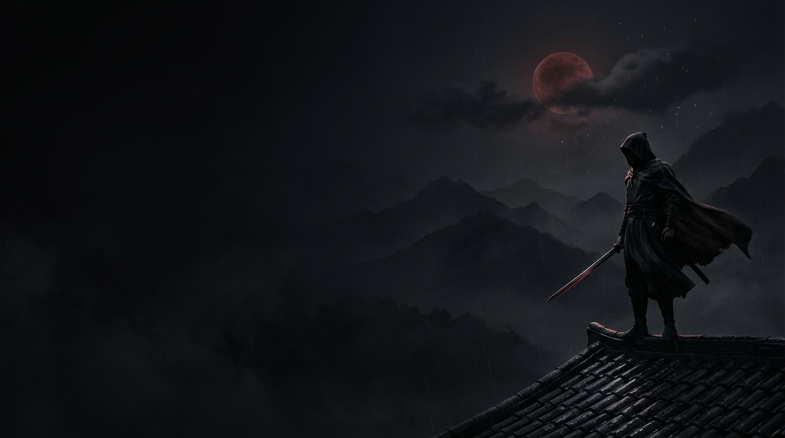
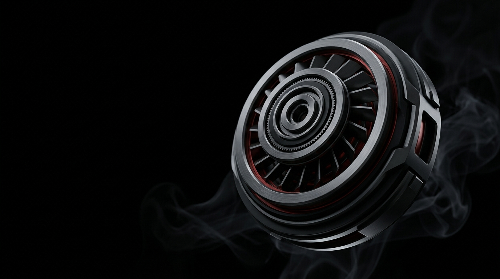

出鞘无痕，帧帧见锋
单文件约 7 MB 的 Windows FPS 增效工具。通过 Intel PresentMon ETW 采集帧率与 1% Low，默认零 DLL 注入；所有系统优化由签名事务日志全程托管，退出或崩溃后自动还原。
7.1 MB
单文件绿色便携
0 DLL
默认不注入游戏进程
100%
SCTL v2 事务级回滚
游戏内现代 HUD，自绘与 RTSS 同步
v1.6.5 重构了整套叠加层视觉。等宽数字保证帧率波动不抖列，五套配色与三档底板在自绘分层窗口、RTSS 与设置预览之间完全一致。
144
FPS
1% 112
6.9ms
CPU38%
GPU76%
64°C
RAM9.8G
62%
TIME
21:40:36
配色主题
底板模式
排版结构

每一项系统改动，皆可对账还原
传统游戏加速工具往往留下难以追查的注册表与电源残留。FrameForge 将底层调度收束为可验证的事务内核，不装驱动，不留后患。
- SCTL v2 事务日志 所有电源计划、1 ms 计时器、进程优先级与核心调度改动先落盘 HMAC 签名原值，配合独立看门狗进程在崩溃或强杀后自动恢复。
- 核心拓扑软引导 支持自动、P 核优先与单 CCD 策略，每 2 分钟采样最闲核心软引导游戏主线程，不强锁亲和性掩码。
- 硬件滤镜与 ICC 23 套预设通过放大镜矩阵、Gamma LUT 与 NVIDIA NVAPI 数字振动实现零注入调色，支持 DDC/CI 硬件背光与 .icc 校色文件。
- 赛后战绩归档 退出游戏自动生成平均帧率、1% Low、温度与功耗报告，本地保留最近 300 局帧率曲线并支持导出 CSV。
影刃夜间与宣纸白昼
纯原生 GDI+ 绘制整卡毛玻璃与水墨底纹，无第三方重型 UI 框架。左右拖动分界线对比两套内置主题界面。


<>
影刃 · 夜间
宣纸 · 白昼
克制体积，公开校验
所有代码以 MIT 协议开源，无需安装 Visual Studio，使用 Windows 自带 .NET Framework 4.8 编译器即可本机编译。
| 维度 | FrameForge | 传统优化与监控套件 |
|---|---|---|
| 体积与部署 | 单文件约 7 MB，免安装无服务残留 | 数十至数百 MB，常附带多项后台服务 |
| 反作弊兼容 | 默认零 DLL 注入，反作弊组件永久排除 | 普遍注入渲染钩子，易与部分反作弊冲突 |
| 系统回滚 | 签名事务日志加看门狗，崩溃自动还原 | 缺少事务记录，异常退出常遗留改动 |
| 隐私与源码 | MIT 全量开源，零遥测零广告 | 闭源、弹窗推广或强制登录 |
源码构建与 SHA-256
在 Windows 10 或 Windows 11 上直接编译，或核对 v1.6.5 发布件哈希。
# Build with in-box csc.exe
git clone https://github.com/caijun-1/frameforge.git
cd frameforge
powershell -ExecutionPolicy Bypass -File .\build.ps1
# v1.6.5 FrameForge.exe SHA-256
43da958dfb965f4659b3f027fd6d9f8495ec5fb02b8407d95edb1cb68daaf99a